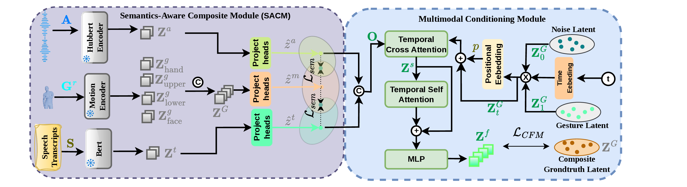
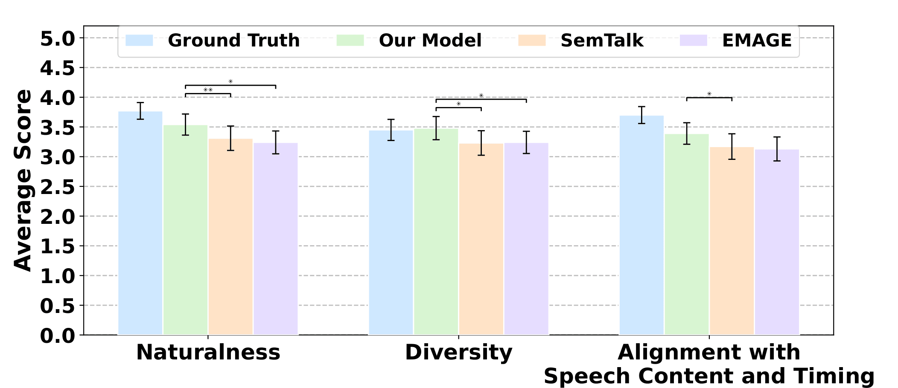

Method Overview
A brief visual summary of the proposed semantic-aware contrastive flow matching framework for holistic gesture generation.
Highlights
Key ideas and contributions of HolisticSemGes.
Semantic Grounding Beyond Rhythm
Existing co-speech gesture generators often learn rhythmic beat gestures well, but struggle to produce sparse semantically meaningful motions such as iconic and metaphoric gestures.
Semantics-Aware Composite Module
We introduce SACM, which aligns text, audio, and holistic motion within a shared composite latent space to improve cross-modal consistency and cross-articulator coherence.
Contrastive Flow Matching
We propose a contrastive flow-matching framework that uses mismatched audio-text conditions as negatives, encouraging the learned velocity field to follow semantically correct motion trajectories while diverging from incongruent ones.
Strong Results on Two Benchmarks
Extensive experiments and user studies on BEAT2 and SHOW demonstrate improved motion realism, speech-motion synchronization, diversity, and perceptual quality over recent state-of-the-art baselines.
Our approach provides a unified end-to-end solution for semantically grounded holistic co-speech gesture generation without relying on external semantic retrieval stages.
Abstract
While the field of co-speech gesture generation has seen significant advances, producing holistic, semantically grounded gestures remains a challenge. Existing approaches rely on external semantic retrieval methods, which limit their generalization capability due to dependency on predefined linguistic rules. Flow-matching-based methods produce promising results; however, the network is optimized using only semantically congruent samples without exposure to negative examples, leading to learning rhythmic gestures rather than sparse motion, such as iconic and metaphoric gestures. Furthermore, by modeling body parts in isolation, the majority of methods fail to maintain cross-modal consistency. We introduce a Contrastive Flow Matching-based co-speech gesture generation model that uses mismatched audio-text conditions as negatives, training the velocity field to follow the correct motion trajectory while repelling semantically incongruent trajectories. Our model ensures cross-modal coherence by embedding text, audio, and holistic motion into a composite latent space via cosine and contrastive objectives. Extensive experiments and a user study demonstrate that our proposed approach outperforms state-of-the-art methods on two datasets, BEAT2 and SHOW.
Framework Overview
HolisticSemGes consists of two synergistic modules for semantic-aware holistic gesture generation.

Main Results
We evaluate HolisticSemGes on BEAT2 and SHOW using Fréchet Gesture Distance (FGD), Beat Consistency (BC), and Diversity. Our method achieves the best overall balance across motion realism, speech-motion synchronization, and gesture variability.

User Study
We conducted a controlled user study with 30 native English speakers from the UK and US using 35-second clips from the BEAT2 test set across six narrated topics. Participants evaluated randomized videos on naturalness, diversity, and alignment with speech content and timing.

Demo Videos
Example gestures generated by our model under different narrative settings.